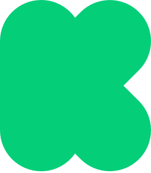

Project we love
The project
The Fujoshi Guide to Web Development is a series of zines/books featuring anthropomorphized versions of programming languages and concepts (aka gijinka), each one engineered from the ground up to cater to transformational fandom (that is, people who create fanfictions, fanarts, meta, and much more), and their sensibilities and interests.
Back us on